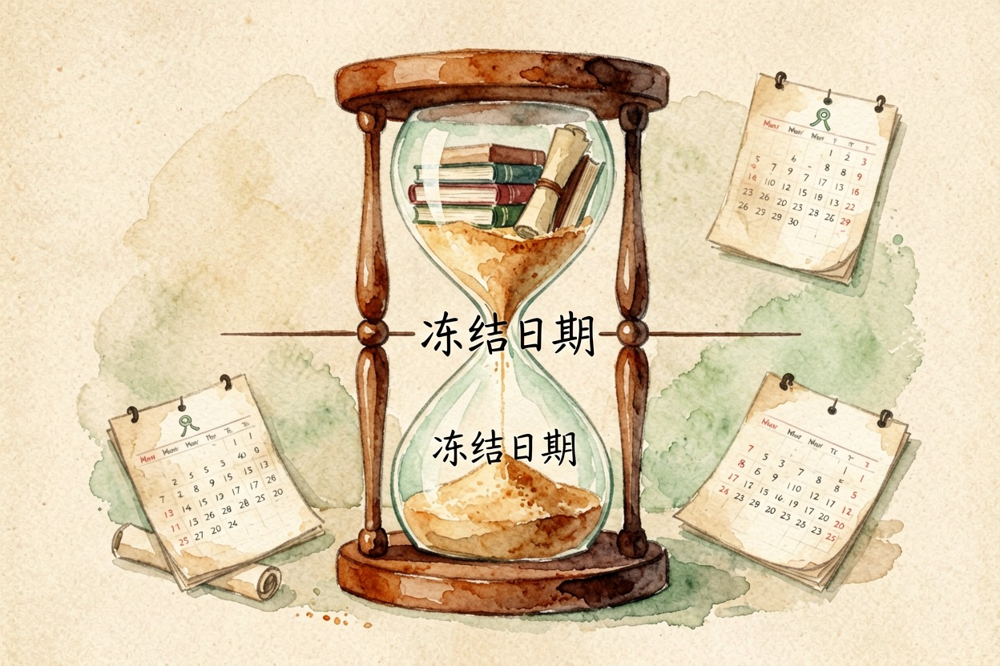
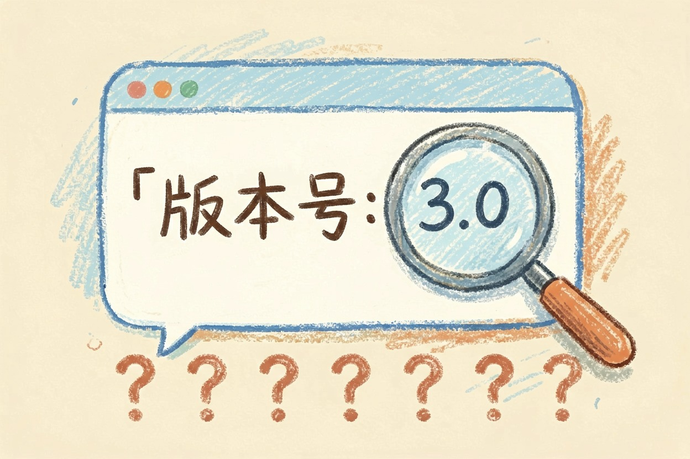
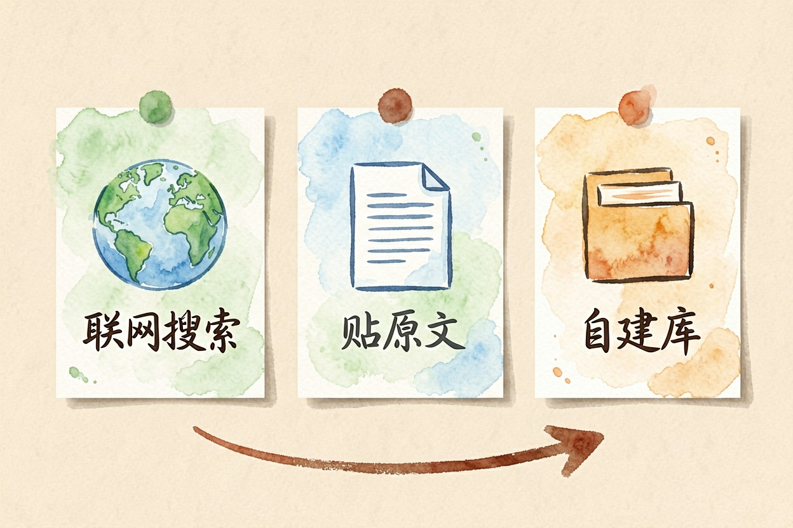
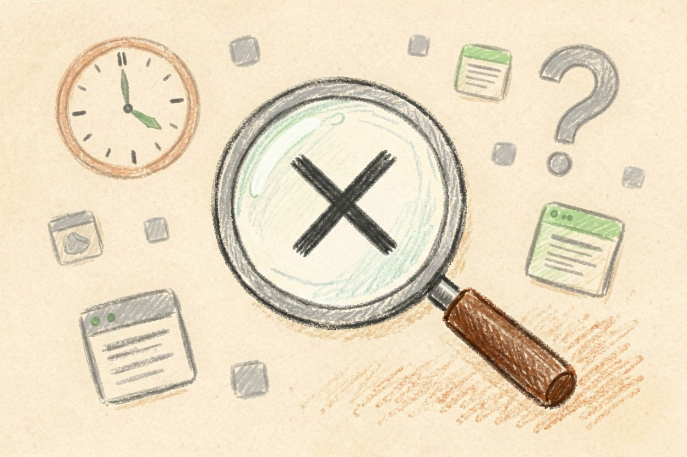

知识截止日期是什么？AI 不知道新事的原因 — Learntide
训练资料收到哪天，模型就只知道到哪天。再往后的事，它要么摇头，要么现编。补救靠开联网，或者把原文喂给它。
知识截止日期是什么：模型的记忆停在那一天

知识截止日期是什么？它指的是模型训练时用的资料，最晚收集到哪一天。这一天之后发生的事，模型没读过，也就无从知道。
所以你问它上周的新闻、昨天发布的产品、最新一版软件怎么用，它大概率答不上来，或者答得驴唇不对马嘴。这不是它偷懒，是资料里压根没有。
它为什么会存在

根子在训练方式上。一个大模型要先把海量文本读一遍，把语言规律压进参数里，这个过程动辄几个月。开训之前，语料得先冻结，不然边训边变根本没法收敛。
训练完还要做指令调优和安全测试，又是一段时间。等模型真正对外开放，语料冻结那天早就过去好几个月了。这也是为什么发布日期和截止那天从来对不上。
顺带说一句，同一个产品的不同版本，截止日期可能不一样。厂商悄悄换了底层模型，这个日期就跟着变。
比不知道更麻烦的是自信地编

如果它老老实实说不知道，倒也省事。麻烦在于，模型的本能是接着往下写。碰到没见过的事，它会按语言规律拼出一个看着像模像样的答案。
于是你会看到编出来的版本号、编出来的发布时间、编出来的人事变动。语气还特别笃定。这类错误最难防，因为它长得和正确答案一模一样。
判断方法很土但管用：凡是涉及时间、数字、版本、人名的回答，一律自己核一遍。越是具体的细节，越值得怀疑。
三个绕开它的办法

第一个是开联网搜索。模型先去查，再基于查到的内容作答，还会附上出处。这是目前最省事的做法。
第二个是把资料直接贴给它。一份新发布的文档、一段官网原文、几条最新公告，粘进对话里再提问，准确率比让它凭记忆答高得多。
【提问模板】下面是我从官网复制的原文（本月发布）：
"""
（把原文粘在这里）
"""
请只依据上面这段材料回答：XXX 的最新规则是什么？
材料里没写到的部分，直接说「材料未提及」，不要自行补充。第三个是给它接一个可检索的资料库，让它每次回答前先去里面翻。适合资料多、更新频繁的场景。
别把联网当万能补丁
开了联网也不等于万事大吉。搜索结果本身可能过时、可能来自不靠谱的站点，模型照抄之后错得更理直气壮。看到引用链接，最好点开扫一眼。
另外，联网只解决「查得到」的信息。你们公司内部的规定、还没公开的资料，联网也搜不着，只能靠贴原文或者建资料库。
还有一点：别用「今天是几号」这种问题去试探它。很多产品会自动把当前时间注入到对话里，它答对了也说明不了什么。想确认能力边界，问一件截止之后发生、且必须知道细节才能答对的事。
把这条边界记在心里，你就不会再指望它天然懂最新的事。知识截止日期是什么，说到底是提醒你：新信息得由你来递。
本文信息核对于 2026-08-08。AI 产品的价格、免费额度与功能变动频繁，实际以各工具官网当前说明为准。